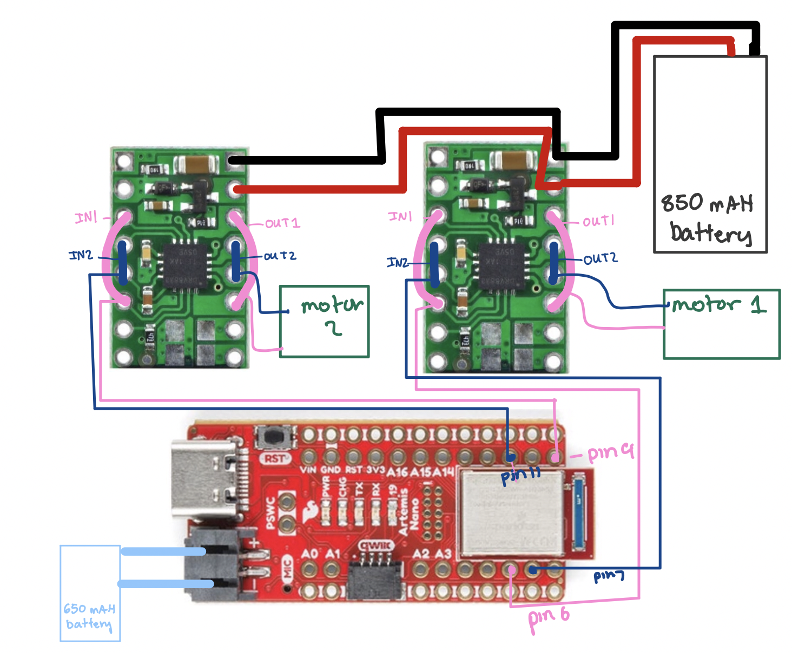
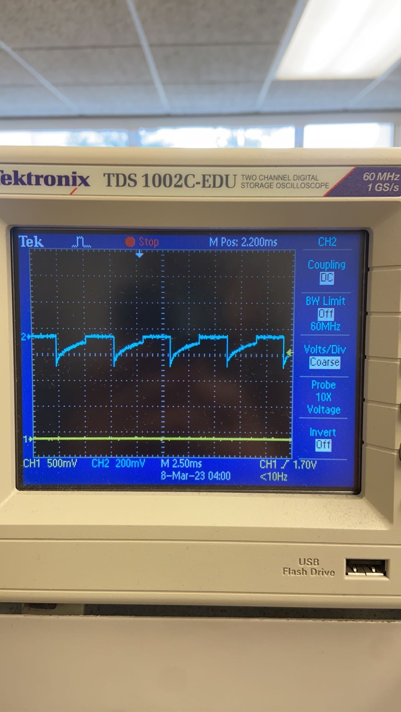
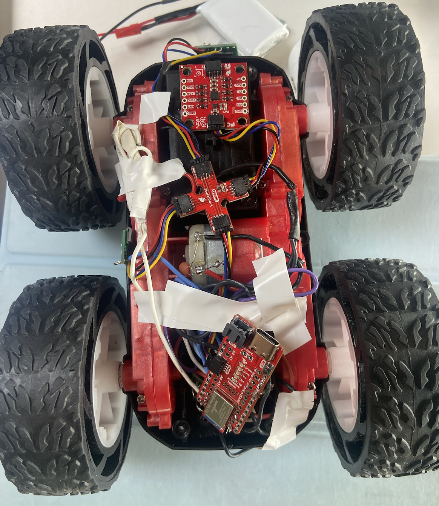

Lab 5 Motors and Open Loop Control
The purpose of this lab was to add open loop control of the car, instead of manual, and then be able to integrate it with the Artemis and the dual motor drivers to execute some fun moves.
PRELAB + SETUP
We will be using two dual input motor drivers and use the two channels to drive each motor as each motor driver has two inputs. After reading through the datasheet for the motor drivers, I needed to make sure that I was using the right PWM pins on the Artemis to be able to drive the motor. The Artemis and motor drivers are powered from separate batteries because the motor uses more energy and also helps reduce the effect of noise on the sensors because of the motor. It also needs a higher voltage battery in comparison to the power consumption of the Artemis. This is a diagram of my setup.

When soldering these connections, I made sure to use solid core wires for the overlapping pins and ensured to use heat shrink if I had used stranded wire. After this setup, I hooked up Vin and Gnd using the power supply and then connected the output of each motor driver to the oscilloscope. I used the AnalogWrite() function to generate PWM signals that could then be observed on the scope. The output of the two motor drivers is shown below.

Take the Car Apart!
After testing the functionality of each motor driver, it was time to implement the sensors + Artemis + drivers in the car. I took out the current PCB that existed in the car and replaced it with my setup, as seen below. This also included soldering the output of the drivers to the motors in the car which was a little tricky because of the way I had setup my wires.

I placed the car on its side to see if the wheels would spin if it was powered by the power supply as seen in the video below. I set the input voltage to 3.7V to replicate the voltage of the motor batteries.
Now, instead of powering it by the power supply, I connected the 850 mAh battery to each dual motor driver to see if the battery would be able to power the circuit correctly. This resulted in all four wheels spinning.
Install In The Car!!
After testing the functionality of everything, I put the car on the ground and messed around with it a little just to get an idea of how to control the robot.
By slowly increasing the PWM value, I could see that the lower limit of the PWM value was found to be around 40 for the right motor at the front facing orientation and around 43 for the left motor at that same orientation.
Open Loop Control
Next, I added open loop control to my robot with this sequence below to move the robot a little bit forward and then be able to stop. I was a little uncertain because I didn't end up having a calibration factor because it seemed like the robot was moving pretty steadily and equally from both motors.